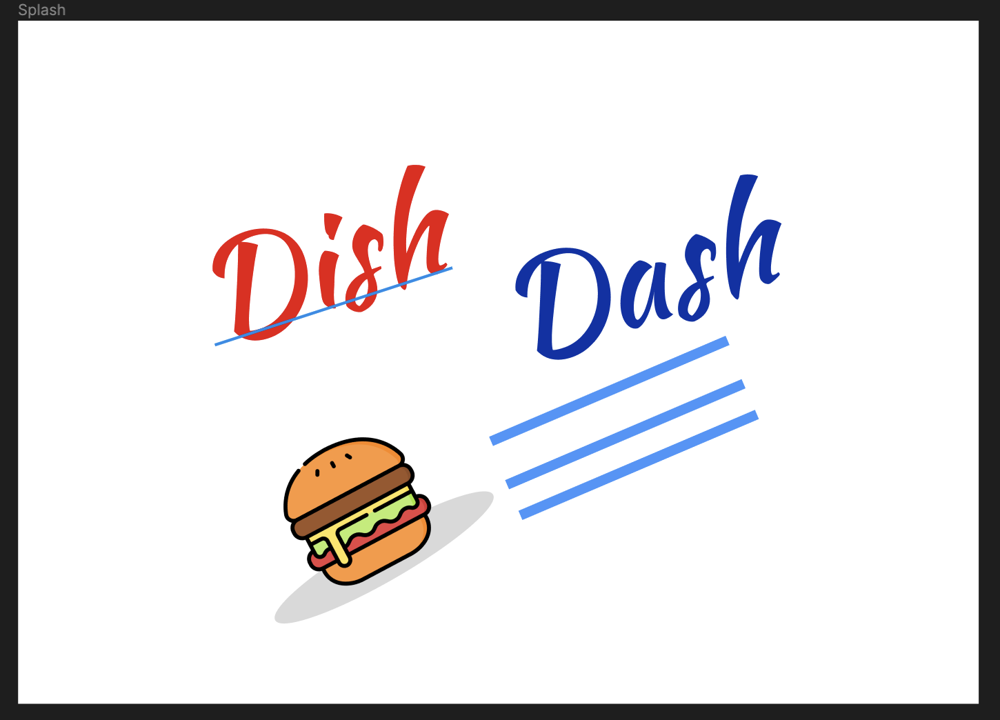
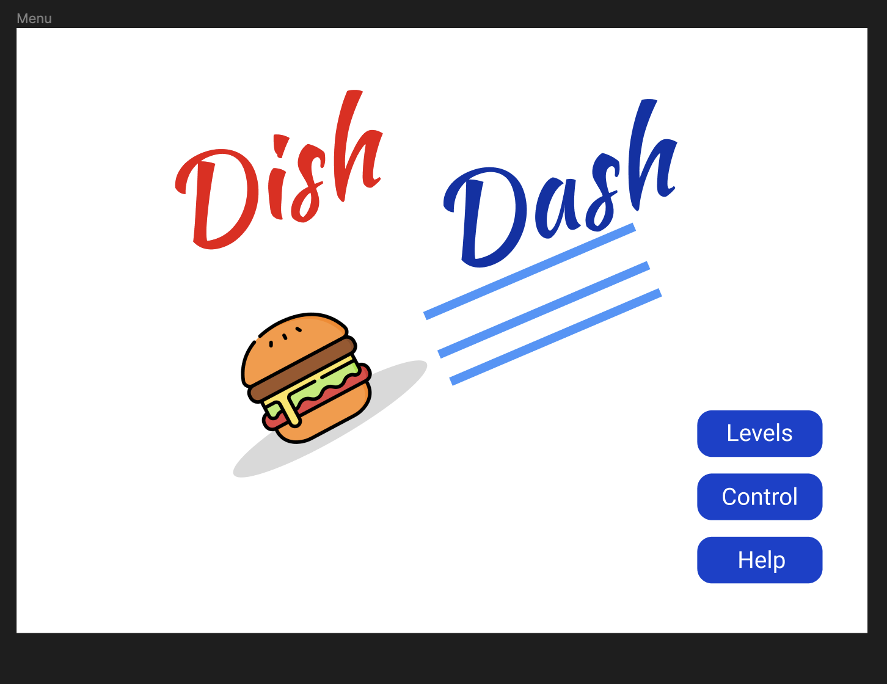
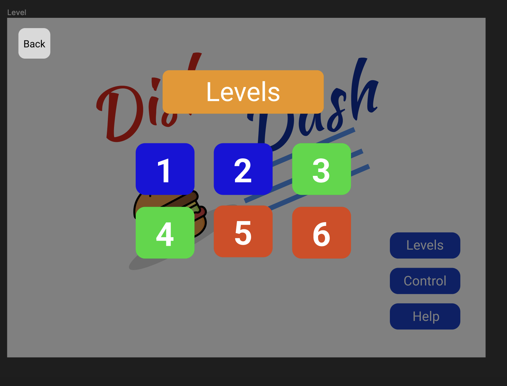
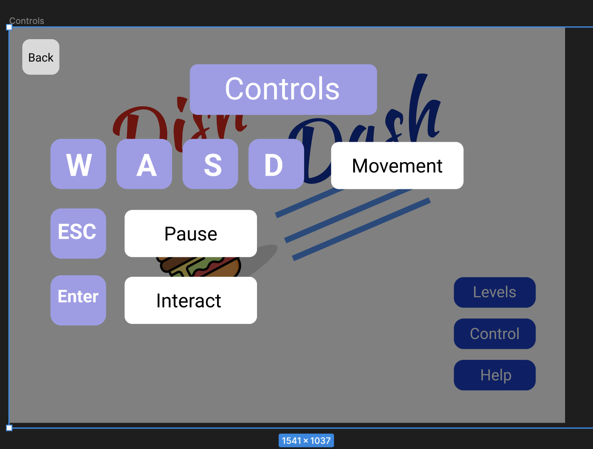
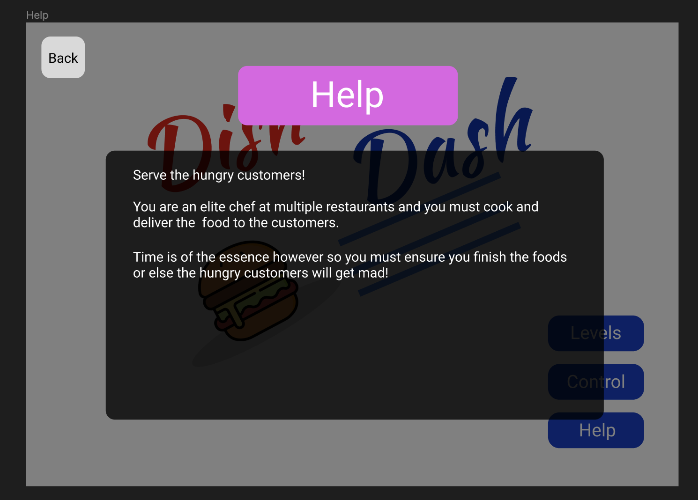
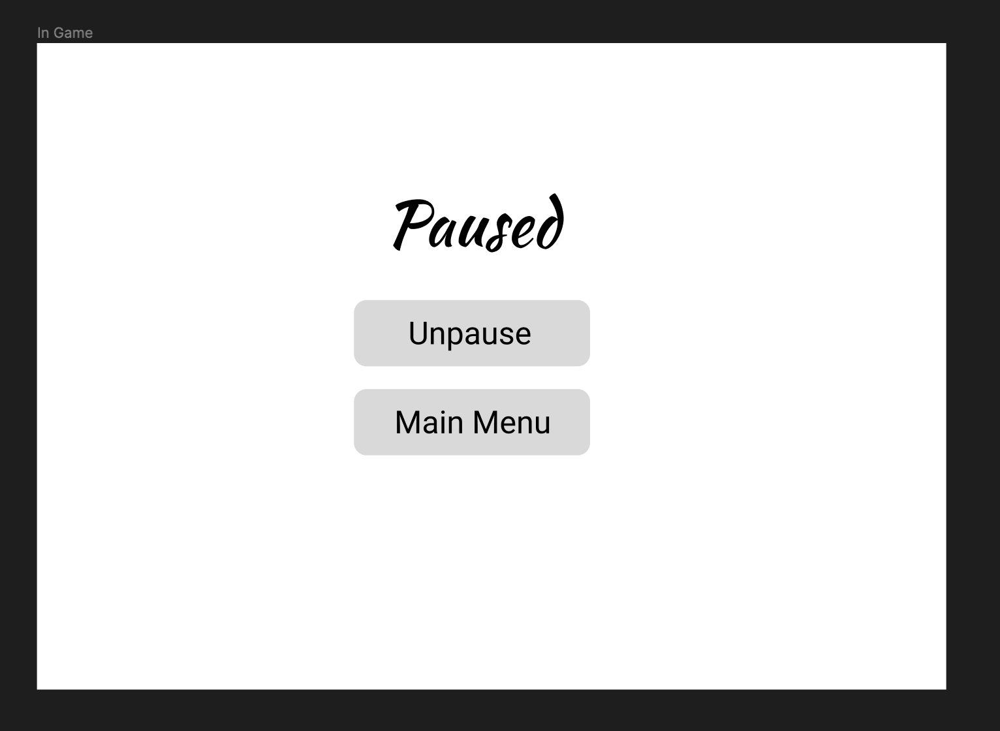

This document describes a game called "Dish Dash", which is designed to be a simple, 2D side-scroller, where players become servers that have to rush to collect ingredients in order to create the dishes customers want. The game takes place in a food court with a total of 6 levels, where 2 levels are designated to each food vendor. The game will employ sprite-based animation, tiled backgrounds, collision detection, physics, AI, side scrolling & gravity, efficient memory management, render threading, and more basic 2D game techniques.
Dish Dash will be developed for the Windows Platform using the McKilla's Gorilla game engine, which is a bare-bones engine developed by Richard McKenna for rapid prototyping 2D games. DirectX will be used as the underlying rendering technology. XACT will be used for all music and sound effects management. Artwork will be brutally simple, and so we'll simply use MS Paint.
After a devastating rainstorm floods Stony Brook's dining areas, leaving students and staff without a place to eat, the campus faces widespread hunger. In response to the crisis, the beloved university mascot, Wolfie, steps up as a savior by opening a vibrant food court: Dish Dash! No longer forced to rely on cheap instant noodles, students and faculty can now satisfy their appetites at this bustling hub.
As an added incentive, students who join the ranks as servers at Dish Dash have the opportunity to attend the university for free—on the condition that they never fail to please a customer. With the campus community counting on them, these student servers must navigate the bustling food court, balancing speed, efficiency, and customer satisfaction, all while striving to keep hunger at bay and ensure everyone leaves with a smile.
In Dish Dash, the goal is to navigate through six challenging levels, where two of each are focused on a designated food vendor within the bustling food court. Time is of the essence as you strive to serve each customer within the allotted time frame, ensuring efficiency and satisfaction. As the timer ticks down, you must expedite orders, coordinate kitchen operations, and optimize serving strategies to meet the demands of hungry customers. With each level presenting new culinary delights and increasing complexity, you'll need to stay cool under pressure and maintain a steady pace to succeed. Navigate through a diverse array of food options, from burgers to baguettes, mastering the unique challenges of each vendor. Only by meeting the time-sensitive demands of each customer can you progress through the levels, earning the honor as the ultimate culinary maestro and ensuring Dish Dash's reputation as the go-to dining destination on campus!
This game will be played using both a keyboard and mouse. Once started, use the following:
A - Move LeftD - Move RightLEFT-ARROW - Move Left (same as A)RIGHT-ARROW - Move Right (same as D)SPACE - JumpENTER - Action; Picking up/Dropping off an ingredient or dishESC - This pauses the game and presents a pop-up window to the player asking them to continue when they are ready. If a game is not in progress, ESC does nothing.Splash Screen - The splash screen GUI simply presents a game logo and will load the game after a few seconds. Upon loading, a brief scripted sequence is played explaining a little about the origins of Dine Dash food court and the back story for the game.
Main Menu - Lets the user start the game as well as go to a levels selection screen, a controls screen, and a help screen.
Levels Selection Screen - this screen should nicely present the playable levels such that the user may select one to play. The difference of colors of the levels indicate the they belong to a certain food vendor.
Controls Screen
Help Screen
In-Game Screen
All artwork in the game will be original. The following needs to be created:
These sprites are all idle and will not perform any animations
The restaurants will have multiple floors and platforms to jump onto and off of. We'll use simple tiles for all walkable/collidable surfaces. These tiles will have to clearly define where the walkable surface is. We'll use straight-grooved walking surfaces. The platforms will be designed based on the specific restaurant in the levels.
Game Music will be added when time permits.